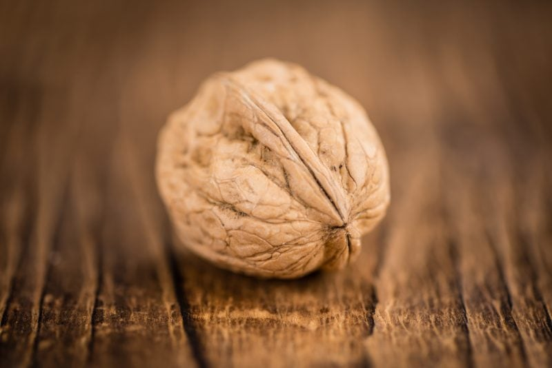
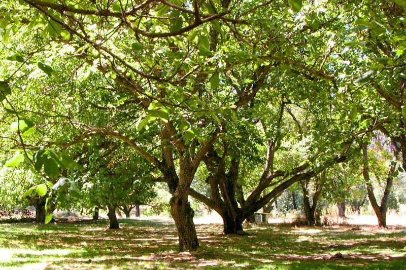
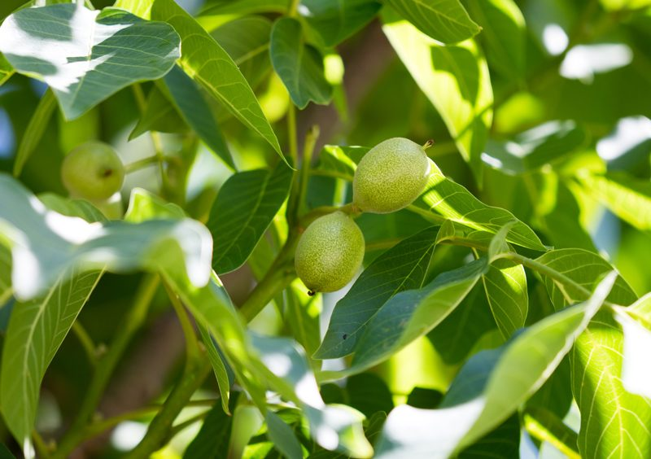
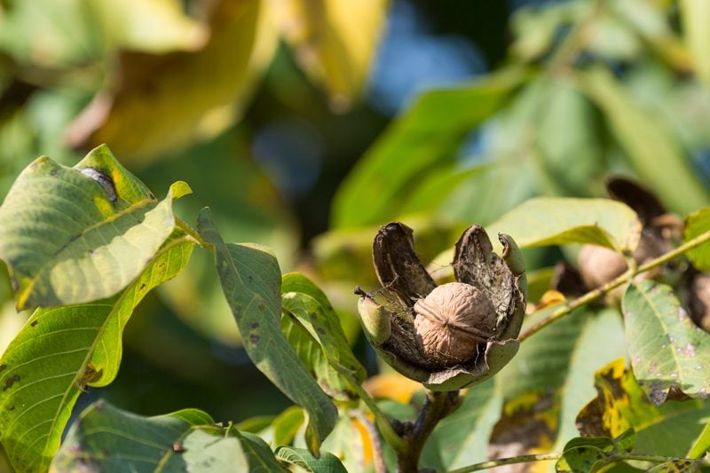

Walnut Trees and How They Grow
We love their earthy, buttery flavor and crunchy texture, but how many of us wonder how walnuts actually grow? The answer is on trees. But unlike chestnuts or hazelnuts, walnuts come from the same kind of fruit trees as cherries, peaches, and apricots. We have all heard of a flock of birds or a herd of cows, but what do you call rows and rows of walnut trees? Walnuts are grown in groves or orchards of trees. Groves are groupings of trees that are grown naturally, while orchards are defined as groups of trees planted by humans. Trees in both settings are cared for by dedicated, experienced growers, and can live for many years. So come with me, let’s stroll through the walnut grove and learn more about this little nut.

I would love to share a quick story if that is ok. My Aunt Kathy and Uncle Wayne live about two hours south of us and they have walnut trees on their property. Both of them handpick the fallen walnuts, and Uncle Wayne cracks them. He doesn’t use a fancy machine. He sits down in front of the TV and shells with them a pair of pliers… one nut after an another. He then places them in gallon-sized bags, storing them away until they come to visit. It is then that we are gifted with a bag filled with love! If you ever get a chance to experience fresh walnuts (versus store bought), please do so!
Let’s now move on to how they grow. Walnuts are fast growing trees (well… relative to the growth of trees) that develop broad canopies reaching 59 feet in width and up to 100 feet in height. It is a light-demanding species, requiring full sun to grow well. The buds wake up from their cozy winter hibernation in mid-April to late May (depending on cultivar) and their leaves fall in early November.

If you happen to come across a walnut tree, pick a leaf and crush it between your fingers. Hold your fingers to your nose and enjoy the lemon-lime scent that they give off. The flowers open before or around the same time as the leaves and you can find both male and female flowers on the plant (monoecious). The male flowers are slender catkins and the female flowers are smaller often found on the tips of the branches. Pollination is carried out by the wind.
Pollination
Walnuts have both male and female flower parts on the same tree. The pollen is shed from the male flowers and should settle on the female flowers. The pollen is physically very small and light and can travel quite some distance. Studies have shown in certain orchards that wind-blown pollen came from trees over a mile away.

Propagation
Walnut trees commonly reproduce in the wild and are very easy to grow from seed. You can grow a walnut tree from a single seed but be prepared to exercise some patience because it can take anywhere from eight to twelve years to start producing walnuts. If you are able to purchase a small tree that is around two years old, you can expect to start seeing some “fruits of your labor” in their third year of being planted. As much as you and I enjoy walnuts so do codling moths, navel orange worm, walnut husk fly, aphids, scales, and mites… so proper care is needed to ensure that there will be some walnuts around for your enjoyment.

What Parts of the Walnut Tree are Used and How?
Timber
- Walnut wood is very stable, hardly warps at all, and swells very little after proper seasoning.
- The wood is straight grained, quite durable, and slightly coarse in texture.
- It is a dense wood, but it machines, nails, and glues without difficulty.
- The tree bark and husks from the nuts are used to manufacture yellow dye.
Walnuts
- Walnuts can be eaten raw, roasted, or pickled.
- They have an oil content of at least 50%.
- They can be ground into a small crumble-like flour to use in raw brownies, cakes, and crackers.
- They can give a recipe a wonderful savory, buttery flavor.
- They are wonderful in savory dishes where they can resemble “ground beef” when combined with mushrooms.
- To better their nutrition, click (here) to learn how to soak them for optimal digestion.
Oil
- Walnut oil is made by pressing ripe nuts and can be used raw, for cooking, or as a butter substitute.
- Look for cold-pressed walnut oil.
- Walnut oil offers a rich source of antioxidants.
- Walnut oil provides hefty levels of vitamins B-1, B-2, and B-3, coupled with vitamin-E and niacin.
Leaves
- Young fragrant walnut leaves can be used to make a wine.
Sap
- The sap of the tree is edible much like sugar maple.
- When a tree is wounded during a particular season, sap will flow from inside the trees (sapwood) out through their wounds.
- When a tree is tapped intentionally, the sap, after collection and prolonged exposure to heat, can be eventually reduced into syrup.
Medicinal Uses
- The leaves and bark have alterative, laxative, astringent and detergent properties, and are used for the treatment of skin diseases; also, the bark is a purgative.
- The juice of the green husks, boiled with honey, is a good gargle for sore throats.
- The oil from nuts can be used for colic and skin diseases.
- The husks, shells, and peel are sudorific, especially when green.
Non-food Uses
- The green husks can be boiled to produce a dark yellow dye; the leaves contain a brown dye used on wool and to stain skin.
- The oil has been used for making varnishes, polishing wood, in soaps, and as a lamp oil.
- The leaves have insect repellent properties; in former times horses were rested underneath walnut trees to relieve them from insect irritation.
Disclaimer
This website is not intended to provide medical advice. All content, including text, graphics, images, and information available on this site is for general informational, entertainment, and educational purposes only. The content is not intended to be a substitute for professional diagnosis or treatment. The author of this site is not responsible for any adverse effects that may occur from the application of the information on this site. You are encouraged to make your own health care decisions, based on your research and in partnership with a qualified healthcare professional.
© AmieSue.com